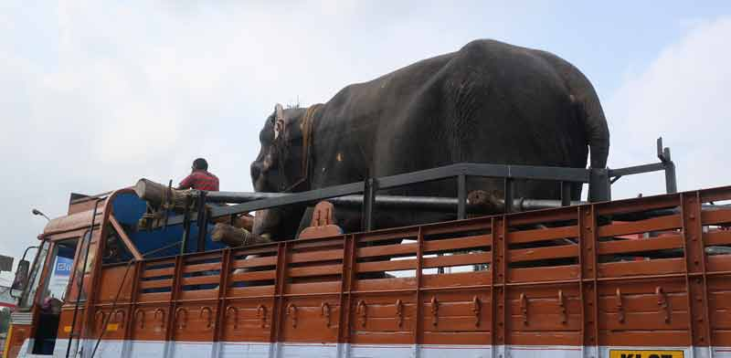
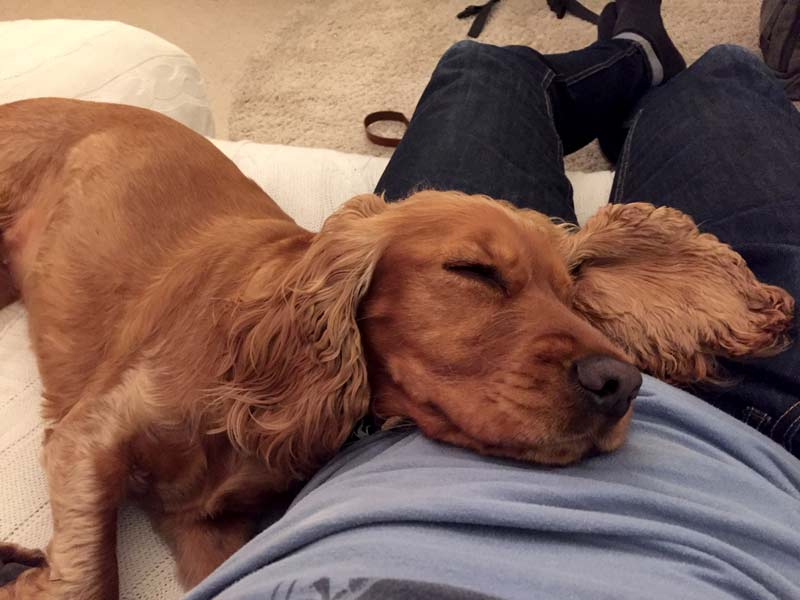
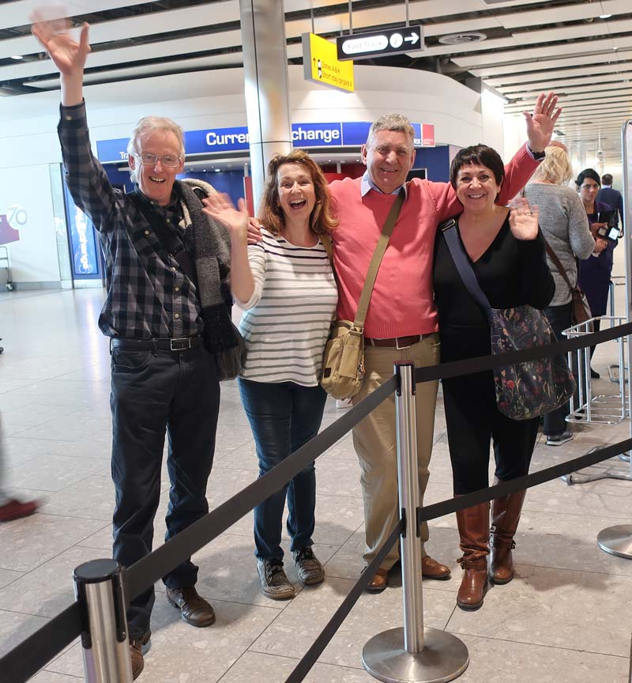
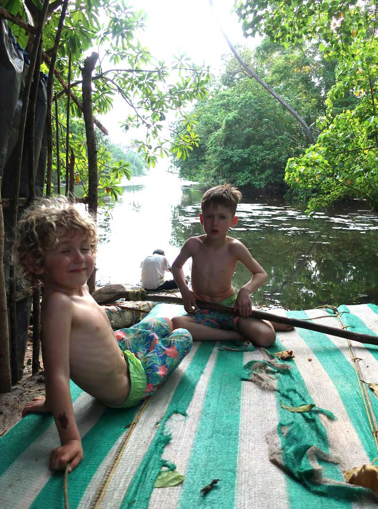
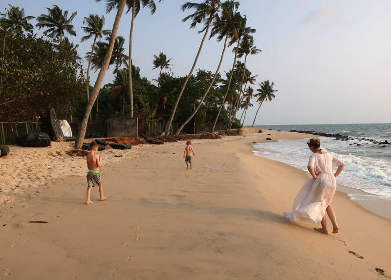

Thirkettles in India
Dazed & confused
 Posted by Will - April 5, 2017Will (aka Dad) is the smelliest member of the family
Posted by Will - April 5, 2017Will (aka Dad) is the smelliest member of the family

Not sure if it’s the lack of sleep, the heat, the jet lag, the elephant on the back of a truck or all of the above… It feels unreal. I’m pretty sure I can hear monkeys in the trees. I often think this when I’m on holiday elsewhere but then tell myself they must be birds. We are in India now, so who knows. After an emotional farewell to our loved ones in England, we set off on our journey to Kerala…
Leaving London
Feeling stressed - I guess that’s normal when you’re leaving a cushty life (a decent job, lovely family, friends, nice coffee, routine etc…) for 2 months with a couple of bags. This shit just got real. After a final hug with our beloved Hattie, we set off with our parents in toe.

Feeling blessed - Our amazing parents came to give us the big send off. Sorry we didn’t manage to have lunch with you guys but we did manage to have a nice one without you!

First impressions
Our first home in India turns out to be just what I had planned. To prepare the kids for India, I thought we should throw them in at the deep end. Go somewhere authentic, simplistic, no luxuries… Well no mod cons anyway. A simple homestay with a bed and an extra mattress, a toilet and an outside shower. A small “boat” to paddle to the beach and a hammock to rest on. We will eat what our hosts cook for us, which just happens to be delicious.
The Secret Beach homestay in Kattoor is simple but clean and even has wifi! The surroundings are beautiful. We are located on a small river amongst other local dwellings. There is so much life here, with the sounds of birds and insects a constant treat.

The beach is a short walk or a slightly longer paddle in the boat. Harrison and Elliot of course love the second option. The locals are so friendly and come to the shore, waving and shouting hello. The beach is amazing. The waves are too strong for the kids to swim in but we have been paddling and are planning to meet the fishermen if we get up early enough tomorrow!

We met four young lads yesterday who were trying to teach us the local language Malayalam. They were brilliant teachers but I was a terrible student. I simply cannot make the right sounds! Anyway, they are all sons of fishermen, and said we should meet them in the morning at 7:30 when their fathers bring in the fish…
Waking up in Kerala
I have definitely become a creature of habit. We all are. A normal day in our flat starts like this. I get up, make my self a coffee. Hattie wags her tail on the sofa, I give her cuddle while the coffee machine does it’s thing. Hattie then goes and jumps in my bed next to Vicky while I have a poo. This happens every day. This is my first morning in Kerala. There is no coffee machine and no Hattie :-/
It is absolutely beautiful here though and Aki-chan’s mother has just given us another lovely breakfast and the tea is really special!